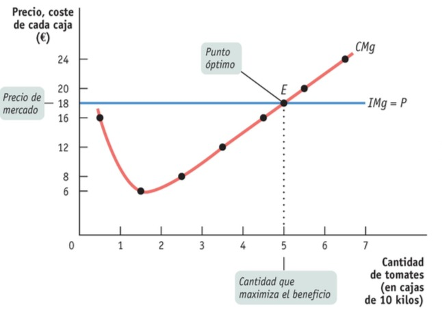
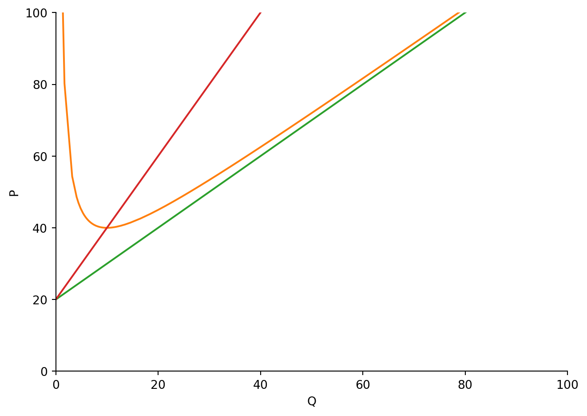
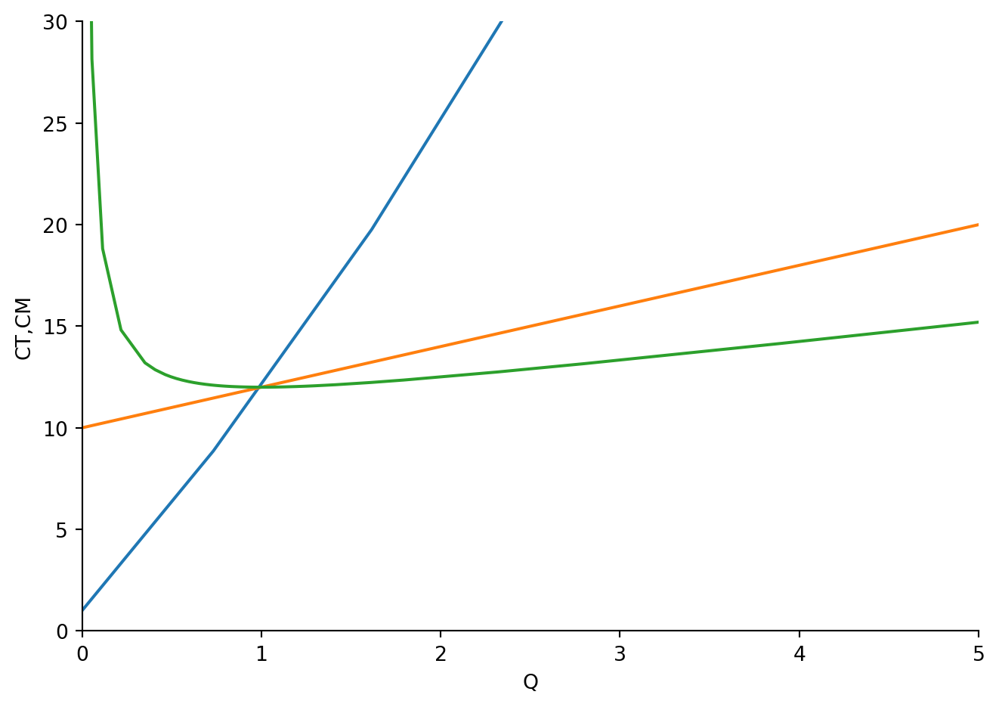

# Paquete previo
from sympy import *
Q = symbols("Q")
# función de costo de corto plazo
CT = 100 + 20*Q + Q**2
# costo variale promedio
CV = 20 + Q
# Encontrar el costo variable minimo
# Primero: costo marginal
CM = diff(CT,Q)Estructuras de Mercado con Python
Competencia Perfecta, Monopolio y Oligopolio
CMg
CVP
CTP
Python
Este post tiene como objetivo dar a conocer la importancia del software de Python en el ambito microeconomico, particularmente en este caso hablamos de las diferentes estructuras de mercado; competencia perfecta, monopolio y oligopolio.
Qué aprenderá
El comportamiento de la industria en el corto plazo y en el largo plazo
Curva de oferta de la industria a corto plazo y largo plazo
Competencia Perfecta
Un productor precio-aceptante es aquel cuyas acciones no tienen efecto sobre el precio de mercado del bien que vende
Un consumidor precio-aceptante es aquel cuyas acciones no tienen efecto sobre el precio de mercado del bien que compra.
Un mercado perfectamente competitivo es quel en el cual todos los participantes son precio-aceptantes.
Una industria perfectamente competitiva es aquella en la cual los productores son precio-aceptantes.
Condiciones necesaria para la competencia perfecta
Muchos productores, ninguno de los cuales tiene una gran cuota de mercado.
Una industria puede ser perfectamente competitiva sólo si los consumidores consideran como equivalentes a los productos de todos los productores (producto homogéneo)
Libre entrada y salida
Existe libre entrada y salida en una industria cuando nuevos productores pueden entrar facilmente en esa industria a los que ya estan en ella pueden abondonarla sin coste alguno.
Regla de Producción Optima
La regla de producción optima dice que el beneficio se maximiza cuando se produce la cantidad de output para la cual el ingreso marginal de la última unidad de output producida es igual a su coste marginal.
\[ IMg = CMg \]
Función de Benenficios
La función de beneficios \((\pi)\) representa las diferencias entre los costos totales, \(C(Q)\) e ingresos totales,\(R(Q)\) , de las empresas
\[ \pi = R(Q) - C(Q) \]
Tomador de Precios
Precio igual al costo marginal
\[ \begin{eqnarray*} CMg = IMg = P \end{eqnarray*} \]
Por tanto, se dice que el beneficio de una empresa precio-aceptante se maximiza produciendo la cantidad de output para la cual el costo marginal de la última unidad producida es igual al precio de mercado, tal como se aprecia en el siguiente gráfico

Costes y Producción en el Corto Plazo
En el corto plazo tenemos las siguientes condiciones de producción de empresas competitivas
| Condiciones | Resultados |
|---|---|
| P > CVMe mínimo | La empresa produce en el corto plazo. Si P < CTMe mínimo, la empresa cubre sus costos variables y parte de sus costes fijos pero no todos. Si P > CTMe mínimo, la empresa cubre todos sus costes variables y sus costes fijos. |
| P = CVMe mínimo | La empresa es indiferente entre producir en el corto plazo o no producir. Cubre exactamente sus costes variables. |
| P < CVMe mínimo | La empresa cierra en el corto plazo. No cubre sus costes variables. |
Ejemplo # 1- Corto Plazo
Primero resolveremos el siguiente ejercicio de manera manual y posteriormente lo resolveremos en Python.
Suponga que la empresa tiene una curva de costos de corto plazo dada por
\[ C(Q) = 100 + 20Q + Q^2 \]
¿Cuál es la ecuación para el costo variable Medio?
¿Cuál es el valor mínimo para el costo variable promedio?
¿Cuál es la curva de oferta de corto plazo?
Solución
Dada la función de costo \(C(Q) = 100 + 20Q + Q^2\) es claro que el costo variable, CV, esta dado por \[CV = 20Q + Q^2\] por tanto su costo variable promedio es \[CVMe = \frac{CV}{Q} = 20 + Q\]
Ahora bien, su costo marginal sabemos que unicamente requiere aplicar la regla de diferenciación, ya que \[CMg = \frac{\partial C(Q)}{\partial Q} = 20 + 2Q\]
Si queremos encontrar el costo variable promedio mínimo, \[CVMe_{\min}\], se obtiene como \[CMg = CVMe \longrightarrow Q = \fbox{0}\]
Entonces la función de oferta es: \[\begin{eqnarray*}CMg &=& p\\[0.2cm] 20 + 2Q &=& P\\[0.2cm] Q(P) &=& \frac{P}{2} - 10 \end{eqnarray*}\]
Por tanto, también podemos obtener el precio de equilibrio, ya que \[0 = \frac{P}{2} - 10 \longrightarrow P = \fbox{20}\]
Ahora, encontremos estos resultados en Python:
# igualar costo marginal y costo variable promedio
solve(Eq(CM,CV))[0]cantidad = solve(Eq(CM,CV))
cantidad[0]\(\displaystyle 0\)
P = CV.subs({Q:cantidad[0]})
P\(\displaystyle 20\)
plot(CT, CT/Q, CV, CM, (Q,0,100), xlim = (0, 100), ylim = (0,100), xlabel = "Q", ylabel = "P")
<sympy.plotting.plot.Plot at 0x27e122c6aa0>Puedes notar lo rápido y fácil que resulta realizar estos procedimientos con Python y la utilidad que puede brindarte en caso de que trabajes con volumnes de datos.
Ejemplo # 2 - Corto Plazo
Ahora suponga que la empresa tiene una curva costos en el corto plazo de la siguiente forma:
\[ C(Q) = 1 + 10Q + Q^2 \]
Si la empresa opera en un mercado perfectamente competitivo, donde \(P = 12\), ¿Cuál será los beneficios de la empresa en el corto plazo?
Solución
Sabemos que la función de beneficios esta dada por
\[ \pi = R - C \]
entonces,
\[ \frac{\partial \pi}{\partial Q} = IMg - CMg = 0 \]
así pues,
\[ CMg = 10 + 2Q \hspace{1cm}y\hspace{1cm} IMg = P \]
por tanto,
\[ \begin{eqnarray*} CMg &=& IMg\\[0.2cm] 10 + 2Q &=& P\\[0.2cm] Q &=& \frac{P}{2} - 5\\[0.2cm] Q &=& \frac{12}{2} - 5, \hspace{2cm}\mbox{ya que P = 12}\\[0.2cm] Q &=& \fbox{1} \end{eqnarray*} \]
entonces,
\[ \pi = 12 - (1 + 10 +1) = \fbox{0} \]
Ahora veamos esta solución en Python:
# Función de costos a corto plazo
Q = symbols("Q")
CT = Q**2 + 10*Q + 1
P = 12
R = P*Q
# costo marginal
CM = diff(CT,Q)
CM
IM = diff(R,Q)
IM
cantidad = solve(Eq(IM,CM))
print("El valor de la producción que garantiza un equilibrio será:", cantidad[0])El valor de la producción que garantiza un equilibrio será: 1Este resultado lo que nos dice es que la empresa oferta una unidad de producción \(Q = 1\).
# Beneficio = IT - CT
costo = CT.subs({Q:cantidad[0]})
costo\(\displaystyle 12\)
ingreso = R.subs({Q:cantidad[0]})
ingreso \(\displaystyle 12\)
Beneficios = R - CT
pi = Beneficios.subs({Q:cantidad[0]})
pi\(\displaystyle 0\)
plot(CT,CM,CT/Q,(Q,0,60), xlim=(0,5), ylim=(0,30), xlabel='Q', ylabel='CT,CM')
<sympy.plotting.plot.Plot at 0x27e0c90e830>Recuerde que todo este análisis se realizo para un mercado en competencia perfecta a corto plazo.
Pronto actualizare para el mercado en competencia perfecta a largo plazo, monopolio, e introducirnos un poco a la teoria de juegos.